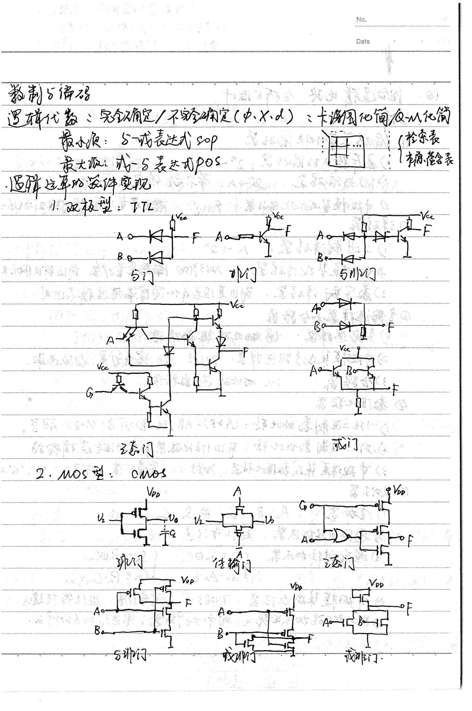
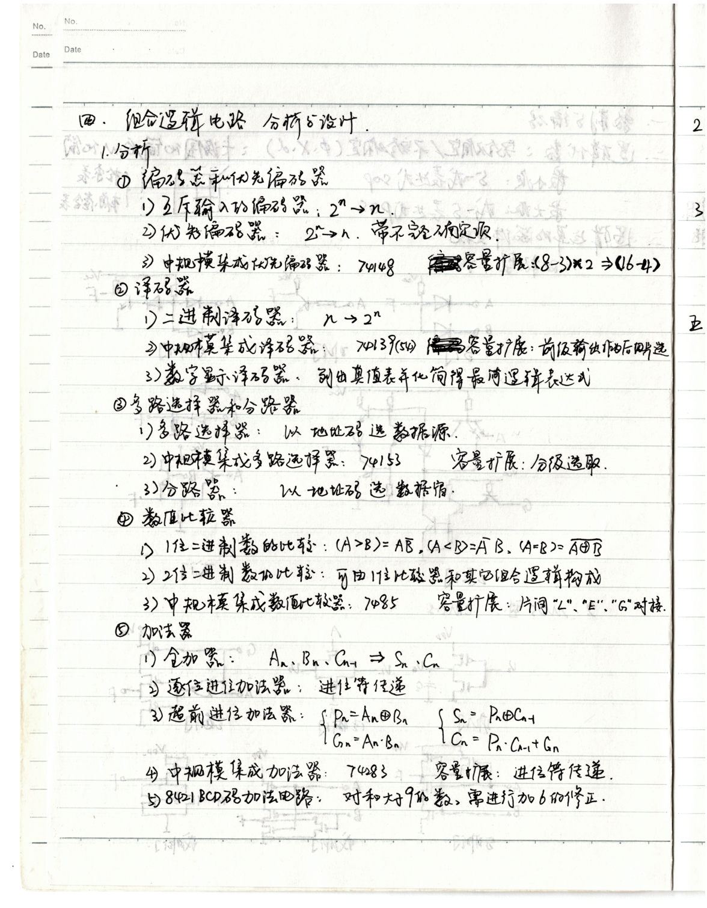
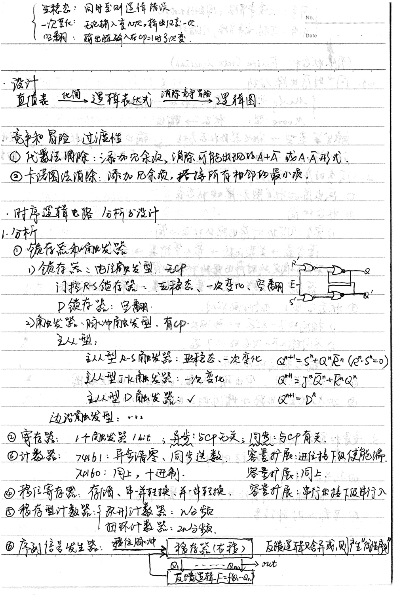
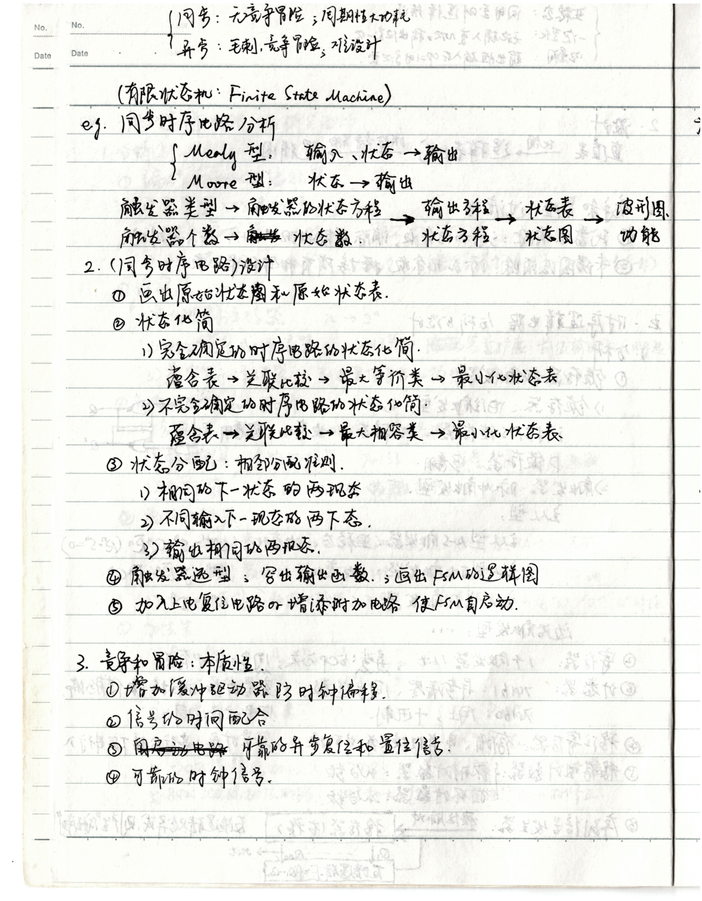
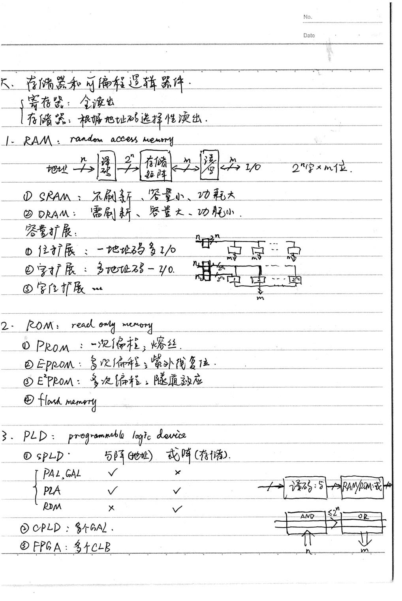

Chapter 4
Digital Electronics
I. Boolean Algebra and Logic Gates
1. Number Systems and Codes
Digital systems operate on binary digits (bits), $0$ and $1$. Common number representations include unsigned binary, two's complement for signed integers, and floating-point for real numbers. Hexadecimal (base-16) is often used as a compact representation.
2. Boolean Algebra
Boolean algebra relies on fundamental operations: AND ($\cdot$), OR ($+$), and NOT ($\overline{x}$). De Morgan's laws state:
$$ \overline{A \cdot B} = \overline{A} + \overline{B} $$ $$ \overline{A + B} = \overline{A} \cdot \overline{B} $$3. Logic Gates
Basic gates are AND, OR, NOT. Universal gates (NAND, NOR) can be used to construct any logic function. Exclusive-OR (XOR) is widely used in arithmetic circuits.

II. Combinational Logic Circuits
1. Minimization Techniques
Boolean functions can be simplified to minimize hardware using algebraic manipulation or Karnaugh Maps (K-maps). The goal is to find the Sum of Products (SOP) or Product of Sums (POS) with the fewest literals.
2. Typical Combinational Components
- Adders: Half-adders and Full-adders. Ripple carry adders are simple but slow due to propagation delay; Carry Lookahead Adders (CLA) are faster.
- Multiplexers (MUX): Selects one of $2^N$ data inputs based on $N$ select lines.
- Decoders: Translates an $N$-bit input into up to $2^N$ unique output lines.


III. Sequential Logic Circuits
1. Latches and Flip-Flops
Unlike combinational logic, sequential logic has memory. An SR Latch is the most basic memory element. A D Flip-Flop updates its output $Q$ to the value of input $D$ precisely at the active edge of a clock signal.
2. Finite State Machines (FSM)
Complex sequential circuits are modeled as FSMs, consisting of a state register, next-state combinational logic, and output combinational logic. In a Moore machine, outputs depend only on the current state. In a Mealy machine, outputs depend on both state and current inputs.
3. Registers and Counters
Shift registers are used for data storage and serial/parallel conversion. Counters iterate through a defined sequence of states (e.g., binary up counter).

